Gilles Châtelet
Chapter 1: The Enchantment of the Virtual
Chapter 2: The Screen, the Spectrum and the Pendulum
Chapter 3: The Force of Ambiguity
Chapter 4: Grassmann's Capture of the Extension
Chapter 5: Electrogeometric Space
We have to postulate that there is a screen in the dark room to receive the species, and that it is not uniform but is diversified by folds representing items of innate knowledge; and, what is more, that this screen or membrane, being under tension, has a kind of elasticity or active force … This action would consist in certain vibrations or oscillations, like those we see when a cord under tension is plucked … (G.W. Leibniz, New Essays on the Human Understanding, II, 12, 1)
We saw (I, 2) how the invention of the triptych quantitas materiae gave a ‘kind of resilience’ to substances.1 are indeed three ‘magnitudes’, but are as it were articulated by the relation . Their complementarity must never be forgotten, eve if it is not explained in the practice of calculation: the indeterminate quantity — the ‘enveloping amplitude’ — is chosen because it is capable of enveloping the variations of the parameter by means of the elasticity provided by the intensity .
We are going to show how such a device goes together with any emergence and unfolding of dimension by first of all analysing how some kinematician-philosophers of the School of Paris, Oresme in particular, were able to clarify through their diagrams what is at work in the relation and find a new angle of attack for the difficult problem of the motion of motion.2 In accordance with the scholastic tradition, it is necessary in motion to distinguish between the extensive point of view — the interval actually travelled, its duration in time — and the intensive point of view — that relating to its quickness or slowness (its ‘lateness’).
The diagrams given by Oresme in his De configuratione qualitatum succeed in creating a plastic unit capable of knitting the two points of view together. They appear as in figure 1.3
The idea is very simple: a mobile subject manages to give extension to the quality of which it partakes (here velocity represented vertically) by travelling a certain distance during the unit of time. We see how clearly the diagram underlines the distinction between extensive subject (horizontal) and intensive subject (vertical).
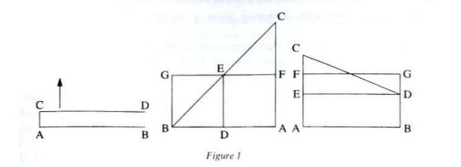
The length is calculated as the area comprised between the line of the degrees and the line of the extended subject, and the different motions appear therefore as deformations of the standard rectangle (see fig. 1).
One thing here is an immediate cause of surprise to the modern mathematician, who would obviously have drawn a graph representing the time on the x-axis and the length on the y-axis, and who would certainly have avoided ‘seeing’ this length as an area (see fig. 2).
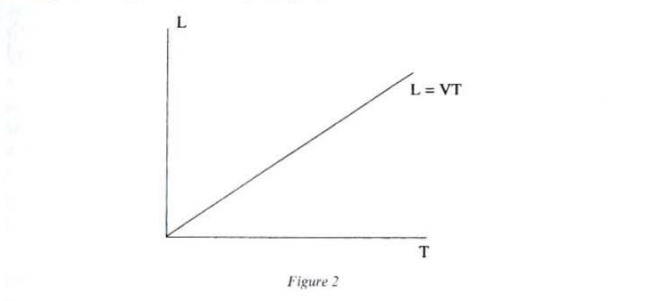
The modern graph immediately seeks to focus all attention on the distance actually travelled by the moving body by reducing it to an output: such a quantity of time at such a velocity ‘transmits’ such a quantity of length and the relation is satisfied with making this bit of the x-axis ‘correspond’ with that bit of the y-axis, thus atrophying the horizontality of the x-axis and the verticality of the y-axis.
The line can only represent the transit of forms, whereas the area has enough amplitude to envelop the units (here, ) of parameter already consumed by the spreading out of . By representing the length as an area, Oresme showed that he had succeeded in grasping intensities and extensions by means of a single intuition, without departing from a tradition that carefully distinguished them.
It should be remembered that intensities are measured by degrees and are only susceptible of ‘more or less’. Thus, St. Thomas Aquinas states, with regard to the increase of intensities:
In forms that intensify and extend, the growth and diminution have a manner of production which does not relate to the form itself considered in itself, but to the fact that the subject participates in them diversely. Now the perfection of a form may be considered in two ways: first, in respect of the form itself: second, in respect of the participation of the form by its subject. In so far as we consider the perfections of a form in respect of the form itself, the form is said to be little or great: for example, great or little health or science. But in so far as we consider the perfection of a form in respect of the participation thereof by the subject, it is said to be more or less: for example, more or less white or healthy.4
In the case of motion, to measure a velocity is to measure how a subject participates in this motion, and St. Thomas adds:
A motion is augmented by everything that is added to it, be it in the form of time it lasts, be it in the form of the path it takes; and however because of the unity of the goal, it is always the same species of motion. Nevertheless, a motion also grows in intensity according to the subject’s participation, that is to say, in so far as the same motion can be produced more or less easily or promptly.5
Intensities allow no such thing as an indifferent juxtaposition: they do not add themselves together: they arrange one another, they increase or lessen one another. A degree that is inferior to another is not included in the latter as a part might be in a whole:
Therefore these increases [of intensity] do not result from the addition of one form to another, but from the more or less perfect participation of the subject in a single form.6
This very strict interpretation of the quality prohibits its dispersion in several subjects; a quality is as it were imprisoned in the subject and no addition can be made except by means of the bringing together of several subjects.
Oresme’s diagrams get round the difficulty by moving variable intensities along a line protracted in the subject7. One can speak here of a regulated modulation of intensities, and it is a single plastic unit8 that grasps the velocities vertically — which are therefore more or less high — and the durations that are represented horizontally, the perpendicularity underlining here the opposition between intensive and extensive. Oresme has the following to say about his diagrams (see fig. 1):
Hence such an intension is to be imagined by lines; and, most conveniently, and truly, by lines applied to the subject, which are erected perpendicularly to it. The consideration of these lines is of assistance and leads naturally to the knowledge of any intension whatsoever … Hence equal intensions are designated by equal lines, a double intension by a double line, and so continually in a proportional manner as we proceed.9
Oresme’s diagrams make the extension of the qualities possible: the subject is not in danger of being trapped between a pure verticality (‘pure’ intensity) and a pure horizontality: that of an already realized extension with no possibility of any further increase. By representing the length as an area, Oresme shows that this length envelops the mobile subject and avoids the dispersion of the qualities:
The quantity of any linear quality at all is to be imagined by a surface whose longitude or base is a line protracted in some way in the subject … And I understand by ‘linear quality’ the quality of some line in the subject ‘informed’ with that quality. For that the quantity of such a quality can be imagined by a surface of this kind is obvious, because there can be found a surface relatable to that quantity, a surface equivalent in length or extension and whose altitude is similar to the intension.10
The length is not obtained only by putting standard measures end to end — that would be a simple accumulation — but mobilizes itself and makes it obvious that a dimension emerges, heterogeneous to the time parameter. Moving a line above a mobile subject to sweep over a surface invites another type of operation than that of the simple juxtaposition of bits of space that have already been cut out: it would be better to speak here of a coalition of stripes generating this or that surface and realizing a device for summing degrees. In combining verticality and horizontality, these devices are not content just to ‘give resilience’ to extended space, but enable us to watch the progressive acquisition of degrees of velocity and even immediately to obtain significant results concerning the ‘uniformly deformed motions’ without knowing any differential calculus, as figure 3 shows.
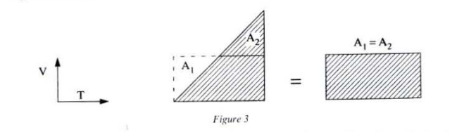
The kinematician-philosopher can thus cut out forms of motion obtained through continuous variations of the standard unit, that is, by the rectrangle associated with uniform motion (see fig. 3). Such deformations provide access to the motion in motion, which is however strictly prohibited in Aristotle’s physics.11 We already know that the question of motion as such is a delicate one for a metaphysic of substance and we see all the advantages gained by these diagrams, which are capable of presenting motion as a regulated unfolding of velocity, as a plastic and undivided unit through which a subject appropriates space.
It should be remembered that, for a scholastic, the measurement is a unit that makes it possible to know a quantity or a degree of intensity. It must above all be understood as an act of knowledge, as an articulation of a degree of intelligibility — here a more or less swift conquest of space by thought — and a rhythm of juxtaposition of parts extracted from the whole. For Oresme, as for us, to measure a velocity is of course to know the distance travelled in a unit of time, but it is above all to judge the more or less great perfection of the grasping of space and its explanation by a subject.
The degree 1 of velocity (absolute mobility) seizes space in the blinking of an eye; as such space is given as infinitely compressed, absolutely vertical. It can also be given as completely extended: this is at the zero degree of velocity, and there is a whole continuum of degrees that unfolds between this degree (4c) and absolute mobility (4a).
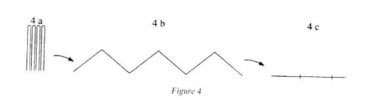
Before it is quantified according to the number of fixed markers that the moving body passes in the unit of time, the intuition of the ‘more or less swift’ attaches itself to a certain degree of virtual grasps of space, and this grasps in fact assumes no prior displacement of the subject. As a kinematician at Merton College, one of Oresme’s predecessors, stresses: ‘To every degree of velocity corresponds the distance that would be described assuming a movement at this degree’.12
This is consistent with the idea that the comparison, the composition or, better, the coalition of several degrees implies a simultaneous grasp of these degrees, and this, within a single subject. One of the masters of the school of Paris has no hesitation in asserting that a successive presentation of the latter ruins all comparison:
A given form of intensity includes several degrees of the same kind such as at the preceding and the following degree; if the following degree, the precise means of distinguishing it from the preceding degree, is neither more perfect nor less perfect than the latter, if, on the contrary, one considers this degree as including in itself the inferior degree, as taken at the same time as this inferior degree, it is more perfect than this weaker degree considered in isolation.13
There is even an effectivity of addition; for if there is indeed dispersion of two intensities applied in distinct subjects their application in a single subject (‘at a single point’ for Oresme) allows for their offensive coalition. Thus, the addition of tepidnesses becomes possible where the latter furnished the classic example that justified the rejection of all summing intensities:
When one adds one tepidness to another tepidness, these two faded heats remain in separate subjects, as before; thus the heat is not thereby augmented; but it would be increased in the addition if the two tepidnesses were made in the same subject.14
Moreover, it is not difficult to see that this is the condition for all intuition of the notion of acceleration: the comparison of degrees of velocity acquired by a single subject can only be made ‘on the spot’ at the same instant. The mechanic-geometer can endow this mobile subject with a more or less swift contemplation; in accelerating, this subject would see markers go past increasingly rapidly, the distance actually travelled being completely beside the point.
Thus, two types of measurement are naturally associated with the addition-juxtapositions of extended units and the coalitions of degrees of velocity. In his commentary, Oresme takes care to distinguish between two terms for ‘to measure’: mensuratur and attenditur. Mensuratur is associated with an exhaustion through iteration. This is the purely quantitative measurement of a size corresponding to a spatial or temporal extension, which assesses therefore whether the motion is more or less big or more or less short. Measurement in the sense of attenditur aims to grasp the changes of velocity, the jumps from one degree to another, and therefore the gap that separates the ‘deformities’ and the unit of motion.
Moreover, Oresme emphasizes that these two intensive and extensive — or ontological and quantitative — measurements have two corresponding figurations. He first describes a ‘horizontal’ journey:
How the acquisition of quality is to be imagined. Succession in the acquisition of a quality can take place in two ways, according to extension and according to intension … And so extensive acquisition of linear quality is to be imagined by the motion of a point flowing over that subject line, so that the part [of the line] traversed has the quality and the part not yet traversed has not the quality. Example: if point were moved over line , whatever part was traversed by that point would be white and whatever was not traversed would not yet be white.15
The extensive journey is therefore assessed as it were by the contrast between a part that has already conquered by the quality and another, still virgin part. On the other hand, intensification can be imagined as the motion of a point rising continuously above the punctual subject. For example: let be the line of the extensive subject, then the acquisition of degrees corresponds to the ascension of the point (see figs. 1 and 5).
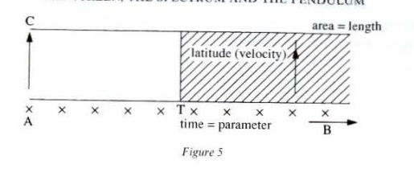 Oresme’s diagrams’ greatest merit is their success in articulating these two measurements, controlling their opposition and staging the principle that means that, in the corporeal order, the ontological degrees and extensive sizes cooperate without becoming merged. Of course, this superposition necessitates the clear demonstration of an extension common to the two motions: here the length already travelled enables the quantitative comparison of the velocities of two mobile bodies, and . We can say that if during a unit of time the mobile body covers and the mobile body covers with .
We have just seen that Oresme makes these inequalities clear by contrasting what has been travelled and what is yet to be travelled. The type of evidence would satisfy the surveyor, who is happy merely to evaluate how encumbered or otherwise spaces are and who knows only juxtapositions (ideal or “real”). The ambition of the diagrams is of another kind altogether: by considering, in defiance of naïve intuition, the length as an area, Oresme means to make it clear that it comprehends the parameter. It is not only that which is already dissipated in the extension, but above all that which makes it possible to give out the ‘ontological’ measurement by degrees and the ‘quantitative’ measurement by standard units by embracing in a single gesture the spreading out of the discrete units by consecution and the selection of a degree of the continuous spectrum of the velocities.16 To consider the length as an area is to make clear that the cooperation of the two measurements involves the invention of a continuum capable of presenting as contemporaneous that which appears as already divided and that which asserts itself as an undivided entity.
Let us call such a continuum the amplum17, as Leibniz does. Leibniz shows that such an amplum allows us to understand two diverse quantities, which are ‘heterogeneous in principle’, as ‘translatable’ the one into the other. To control this ‘heterogeneity’, he constructs diagrams that articulate two series, one of which (the ‘appliquat’) is presented as discrete and the other (‘the appliquant’) as a family of degrees. This family is applied ‘in composed reason’18 at each point in the discrete series, that is to say by following the order of the terms of the series and is represented by continuous lines in figure 6, which is a copy of Leibniz’s diagram.
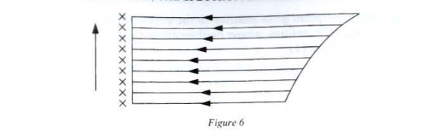
This diagram clearly marks the opposition between the discrete and the ordered presentation of the appliquat (the ‘patient’) and the undivided arrows of the appliquant (the ‘agent’), which ensure the perpendicular distribution of the intensities (of the ‘action’). There is also a noticeable rebalancing of the roles, as it were: it is the patient that standardizes the order of the terms of the series, the unfolding of the degrees. The parallelism of the arrows avoids the dispersion of these degrees by limiting to a single gesture the distribution of what Leibniz calls the ductus19 and which presents the amplum as a striated area, like a fascia of the stripes.
There is no exaggeration in speaking of an ordered compenetration of the two series of factors: the constant perpendicularity of the appliquat discourages any neutralization of the second by the first and therefore any dissemination of the degrees that would lead to their impotence. The strip effect exerts a pressure in the same direction: by knitting together the discrete and the continuous, it forbids the gaze any peaceful crossing of the amplum that would reduce it to a juxtaposition of parts. Leibniz’s amplum, as a diagram of the ‘placing according to composed reason’, as a striated area, makes it clear that the homogeneity must be won and that, far from resulting from a neutralization of the dimensions, it accompanies their emergence. This diagram, in the tradition of Oresme, shows that ‘the outline of one dimension in another is the real manifestation of mental multiplication’20 by coalescing two effectivities traditionally opposed to one another:
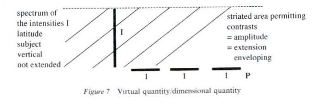
The diagram of amplum gives priority to the envelopment in its strategy of ordered unfolding of intensities, whose mathematical expression could be condensed to the formula (1): where is a parameter, is an intensity and what we called at the outset an enveloping amplitude. The diagram of the amplum makes it clear that the integral sign — for which Leibniz opted only after long hesitations21 — has to be understood as an unfolding, that is to say as an enveloping contemporaneous with a fibration. The triptych is a hinge: it opens a dimension at the same time as closing it.
The sign is not an ‘abbreviation’ that designates the approximated summing up of the amplum by ‘little rectangles’; rather it is because it unfolds that it can be related to such approximations. One will therefore not be surprised to encounter such diagrams and formulae in the exposition of a physics that does not confine itself to drawing up a simple record of the fact of diversity.
Hence, energy can be defined as: or, diagrammatically, as in figure 8:
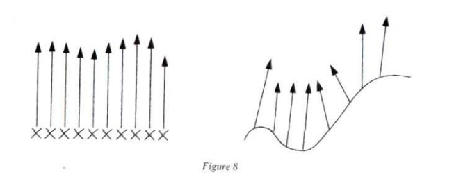
The latter is obtained as the ‘composed reason’ of the journey along a path and of a force applied at each point.22
The end of this chapter and the commentary on Grassmann’s Ausdehnungslehre (given in chapter IV) will allow us to demonstrate yet more clearly the repercussions of the diagram of the amplum and the gesture of integral envelopment that made it obsolete.
The preceding examples might easily lead us to think that the articulation can be expressed by a statement of the kind ‘ “gives” “because of” ’. One would ‘begin’ from the parameter to obtain ; there would be a kind of ‘natural’ transitivity from to , represented by: But this mechanical cliché overlooks that the cutout of the triptych is precisely the condition of this transitivity, which, afterwards, seems self-evident. The parameter is by no means the point of departure, the ‘obvious source’ from which flows, as in a function; the ensuing example, borrowed from thermodynamics, shows that the envelopment does not necessarily ‘follow’ from the parameter.
In the relation (where is a variation of quantity of heat, is the temperature and is the variation of entropy), we ‘being’ from , which, when divided by , will ‘give’ the variation at the parameter . Here, the envelopment by the quantity of heat seems rather to precede the intuitive grasp of the parameter , whose unit is not at all revealed by sensible clichés and, in this particular case, the perpendicularity decided by the triptych seems to ‘descend’ from to .
In its strategy of breaking with mechanical clichés, modern physics has recognized that the undivided character of the amplum triptych and the promotion of the envelopment (permitted by ) played a crucial role. To grasp spectra of variation, it first positions itself in an amplum of paths, fields, and even universes23 and strives to discern the most determinable fold of this amplum. As we shall see at the end of the chapter, the amplum permits an individuation obtained by promotion of the singular — an ‘optical’ individuation — and not by totalization of previously cut-out parts.
We are forewarned: tepidnesses coalesce only in a single subject and, to be effective, the degrees can only be distinguished by remaining as it were enshrined in their spectrum; one could not appropriate them by removing them like the petals of a flower: it is necessary to find a device that unfolds them as contemporaneous elements.
This is particularly relevant to the degrees of velocity: a velocity taken on its own has little to tell us, but a range or fan of velocities prepares the intuition much better for a leap. This is why it is not enough simply to take an inventory of Oresme’s rectangles which corresponds to the various degrees of velocity. Between them there exists a kind of connection that precedes the determination of this one or that one. The velocities should not be added up like rulers placed end to end, but should be grasped in the way that a single object would unfold them in thought in order to inspect a space more or less promptly. We should therefore speak of the spectrum of the velocities and, in this spectrum, the maximal degree (the degree 1 of velocities) (see fig. 4) clearly plays a very particular role:24
It is this degree that opens and closes the amplum (the ‘space-time’) and the distinction between time and space is possible only for bodies capable of rest (non-zero masses).
To render the coalition of the velocities diagrammatically, it is not enough just to associate a rectangle that is simply ‘bigger’ than the others to the first degree (see fig. 9a), rather it is necessary to make it an operator of perspective projection (see fig. 9b).
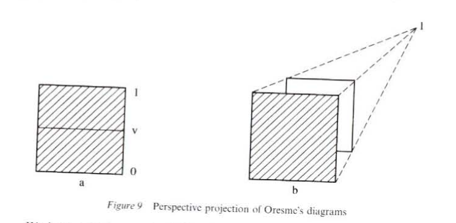
We have seen how each of Oresme’s rectangles managed to give extension to a degree of velocity, by considering the length as opened out by the moving body: the area-length summed together lines of velocity and made clear the connection with the mobile subject (see figs. 5 and 8). If we now want the unfolding of the spectrum of the velocities and the coalition of the degrees to jump out at us, we must make ourselves capable of a contemplation that takes in all the diagrams in one go, and makes the subordination of the imperfect degrees to the degree 1 patient and creative.
The degree 1 thus appears as ‘inaccessible’ from an inferior degree, but above all as the degree that surreptitiously controls all the explorations carried out to a given degree. By stealing away like a mirage from any observer who would try to fix it opposite him like an ‘object’, by giving itself an ‘asymptotic’ for all imperfect degrees, the degree 1 firmly establishes itself as the degree where it is expressly required to position oneself right off if one wishes to embrace all degrees in a single look. The degree 1 of the velocities must therefore function as a horizon for Oresme’s diagrams: this is probably the central intuition of relativity.
We have already been able to judge everything that was gained by these diagrams that combined envelopment and perpendicularity and how the pre-conception of a space simply constructed by juxtaposition of dead extension found itself destroyed. No length without velocity! To this dogma of the kinematician-philosophers, the perspective projection of Oresme’s rectangles echoes in reply: no space without depth, without appeal to the discernment, without the power to envelop things!
Now, the effect of perspective resounds for a spectrum of velocities as depth does for the degrees of removal from a painting where ‘the space that one imagines overflows on all sides the space represented, the finitude itself of the painting making the infinity of space and its continuity perceptible.’25
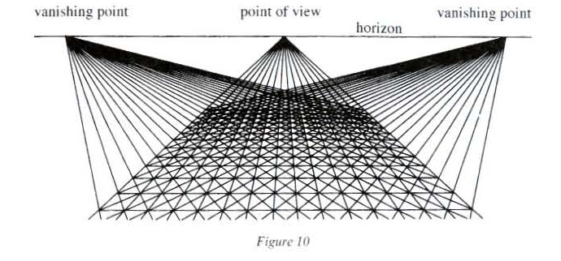
But this contemplation could not be mutilated by reducing it to a look that disregarded horizontality and contented itself with merely sweeping from bottom to top over the degrees of a scale. The obliquity that gives the effect of depth in a painting is achieved by a regulated knitting together of verticality and horizontality.26 Everything rests on the manner in which a degree of removal and an apparent diminution of the standard measure of length are articulated; perspective can therefore by understood as a compensating device between a virtual leap from one distance line to another and a virtual contraction of the associated standard measures. Obliquity decides on a pact between the vertical and the horizontal; it obliges the eye to arrange juxtapositions in a scale and therefore to give a height to an iteration.
But for all that there is no question of sacrificing horizontality, and this is what the great masters of perspective had grasped so completely in often having horizontal motifs like the degrees of a thermometer but compel the eye to accept the patience of the oblique; one must saturate oneself with the degrees of removal without ever letting oneself be trapped in verticality or horizontality alone, and everything that can be contemplated by a simple raising of the look or by a lateral inspection only wrecks the depth.
We know that the horizon is the location of the subordination points of all similarities, the central axis of a balancing game between vertical and horizontal which contains them all. Is a device as powerful as this not in danger of merging all the degrees into a single one? No, because the degree 1 is not a common denominator of these degrees but a hinge that distinguishes them by unfolding them: the compactification of the singularities distinguishes between them much better than their presentation one by one.
Note well that the ‘metric’, dependent on a neutral observer dedicated to measuring the intervals between things, the distances from point to point, can only be the arbiter of a combat that has already been won by the spatial. To this defeat of the metric, it is necessary to oppose the victory of the ‘projective’ — that of the horizon that teaches thought to overturn all the finite degrees of removal. With the horizon, the infinite at last finds a coupling place with the finite. Its absence ruins the creative homogeneity provided by depth. This homogeneity is by no means the same as an averaging operation. Remember that the latter attempts to neutralize after the fact the disparity of a collection of objects by producing a standard measure whose iteration exhausts this collection extensively. It is exactly this type of operation that is demanded by the finitude that has been divorced from infinity. It requires a homogeneity that does away with relief — albeit a relief as derisory as that of a set of differences — and with time makes all things equal. The finite, isolated from the infinite, remains blind and clenched in the illusory guarantee of the one-to-one. Finitude fetishizes iteration: it naively clings to a manipulable unit and would thus become intoxicated with concreteness while forgetting that it surrenders itself bound hand and foot to the demands of the successive, which gives it no respite: it endlessly covets the next + 1. It will see one, two, three …, n poplars, but will never manage a row of poplars (see fig. 12a).27
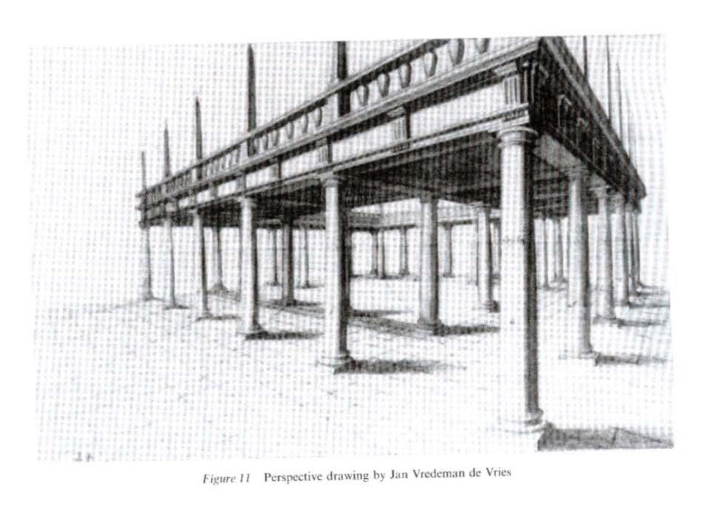 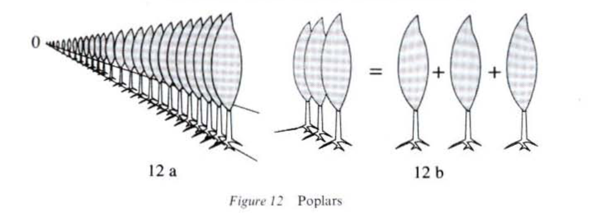
For a row, mutilated from the horizon that unfolded the similarity, immediately breaks up into one, two, n poplars and so on (see fig. 12b): the poplars are at once too diverse and too identical and, engaged in such a calculation, one soon finds oneself hoping for a ‘true difference’, forever hounded beyond the finite: there lies the frustration of the indefinite, a false infinite.
An iteration deprived of horizon must give up making use of the envelopment of things,28 and, as figure 12b shows, by truncating the oblique, one tips quickly into the triviality of the juxtaposition and the transportation of units.
We could, of course, go to check ‘on site’ that the segments are not ‘really’ at the same distance, but, without a horizon, no device alludes to it. The situation is identical for the line of people in figure 13: the eye positioned at observes only an apparent equality of size between . Naturally it is enough to move the eye a little to dissolve the illusion of this equality which was obtained from a random position and which obviously does not institute the grasp of projection, capable of unfolding similarities, without spatial displacement and prior to any submission to an etiquette of verification. The joining of the finite and the infinite provided by the horizon invites more a pivoting than a transfer or deduction. This joining up does not measure the distance that remains between things, but invites the degrees of removal, always suggested as only virtually distinct, to distend.
This subtle device, which loathes the easy victories of the equalities or differences that are taken for granted, nonetheless demands, to interfere in the envelopment of things, a sharp cutout. Any timidity in deciding the horizon tips the infinite into an indefinite. Furthermore, this indefinite also contaminates the finitude, which, when it is simply placed beside the infinite, ignores the discipline of the oblique and breaks up, still nursing the hope of recapturing its foundation — the infinite — which always steals a little further away. This is why, in the indefinite, everything ‘finishes’ by being the same thing: these are the ‘distances’, and these ‘distances’ sometimes venture as far as the foreground, a bit like wandering ghosts from the infinite that was not neatly decided one way or another.
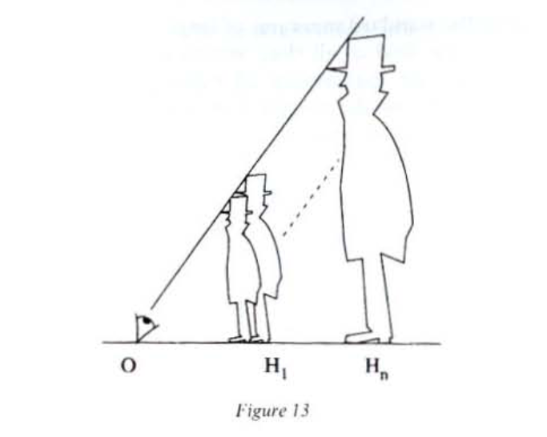
It is therefore necessary, in order to refuse any concession to the indefinite and to appropriate a geometric infinite, to decide the horizon, by saturating oneself with the discipline of discernment that it proposes and which makes the infinite shine in every finite thing. Whether it is a question of a landscape or of a domain of knowledge, the obliquity given out by the horizon imposes a fragile but implacable norm, which, by setting right the figures of finitude (iterations, transits, logical chains …), establishes a precious hinge between the sparkle of the ‘metaphorical’ and the already domesticated rational. Remember how Leibniz mastered the ductus by the regulated exposure of the degrees. The metaphorical leap produces generous clusters of unusual significations (the ‘dazzling tissue of metaphors’ of which Jacques Lacan talked); they spread out well beyond familiar referents, but only to burn out and ‘fall back’ rapidly into the accepted literal meaning, if they have not been able to provide themselves with a horizon that opens a field, a continuum of degrees, between the illusion of a transparent reading and what looks as if it will never be within reach because it maintains all these ‘reaches’. This field, which governs the distribution of degrees of discernment, takes over from the metaphor, which, as soon as it no longer grasps two ideas in one, succumbs to the gravitational pull of ordinary language and allows itself to be divided into two doubtful significations. The horizon therefore rescues the cluster of the impertinences of metaphor by preparing a protocol that folds it out or closes it back up like a fan or range of degrees. This protocol guides a more patient approach to the unarticulated and although it is never reduced to a formal policy, no less clearly prescribes a field of experiment, as the examples in chapters IV and V show.
The horizon makes it possible to venture into the turbulent space where science, art, and philosophy brush against one another without merging. This space is naturally much fought over and the obliquity and cohesion of a field of intensities are at once won against the density of the figural and its lateral pressures and against the discrete sequences of the discursive. The horizon of a landscape or of a domain of knowledge leads to an articulated contemplation of the field that reveals that what hollows out the degrees of discernment is also what joins up the standard measures of length or the units of signification. The horizon opens the field of all that, virtually, is within reach, capable of being deduced, filled, but that evades all these gestures that it nonetheless sustains. One cannot extract the horizon from the ‘projective’ without mutilating the field-fan’s capacity of unfolding. the horizon is not ‘accessible’, but adheres no less to the grasp that it inaugurates and controls: it is as unremitting as Bluebeard’s key.
Jean-Toussaint Desanti says quite rightly that it is ‘implicit and co-posited’.29 The horizon is neither a boundary marker that prohibits or solicits transgression, nor a barrier drawn in a dotted line across the sky. Once it has been decided, one always carries one’s horizon away with one. This is the exasperating side of the horizon: corrosive like the visible, tenacious like a smell, compromising like touch, it does not dress things up with appearances, but impregnates everything that we are resolved to grasp.
Any detailed inspection of a landscape or of a domain of knowledge presupposes a survey, and the horizon is what endows caution with some style. If this survey were reduced merely to prescribing a ‘horizontal’ reading and a ‘vertical’ reading, it would lead only to a fixed stratification. The survey induces an axis of distribution of the mobilities that reactivate knowledge: the strata become a field, whose exploration implies a norm of virtual grasp of the statements. This norm never offers itself up placidly for analysis and always evades anyone who would seek it ‘on the near or far side’ of the horizon that controls it. Its withdrawal is always painful and is paid for by a ‘metaphorical’ dislocation of the field or by its reduction to significant networks coordinated to a code.
The implicit pressure of the horizon is like the scar of a gesture, since it is a gesture that has been able to establish a delicate pact between the lateral pressures of the image tending to fuse the degrees and the forces aiming to explode the axes into significant units. This pact is not nothing: it is perhaps one of the keys to the preparation, always allied to a process of learning (see I, 2), but the horizon-scar is always implicit to give some latitude to a protocol of allusions that must never congeal into abbreviations. There is indeed an availability of the horizon; it is never that of the computable; it pinpoints and organizes stratagems of compression of deductive chains; it even ventures, as we shall see, to utter ‘principles’ which, if they are not yet ‘axioms’, do not discipline fewer fields of experiments. This availability is, of course, to be compared with the horizon of velocities, which, because it is not tainted by any particular finite degree, can unfold virtually all the degrees of discernment of time and of space, all the hinges which, in the same motion, distend the degrees and join up the standard units of length or time. The availability invented by the horizon is indeed that of the fan which offers an elastic refuge to the intensities: one can thus, as one chooses, liberate them or put them in reserve. This is what allows metaphors to come to life again and distances to offer themselves as depth. The fan is not available like a thing: a fist that closes about it only crumples it. Its ambition is of quite another kind: it aspires to regulate an exposition by articulating a resolution into a notion and a resolution into an extension.
The horizon orchestrates as it were a subversion of the finitude where each part is endowed with an elasticity that invites it to overflow itself and to promote a unity that is more that of a class of tangibles (or that of the rainbow) than that of the parcel.
We see to what extent the sovereign and elastic horizon walks hand in hand with the virtual and partakes of some of the characteristics of a type of effectivity that can excite propulsions, dilatations: in short, audacious thought experiments.
This is why Einstein decided to position himself right away at the horizon of the velocities by perching on a photon,30 thereby renewing a scholastic tradition which asserted a maximal degree of perfection, even if this meant eroding it towards the infinitely obscure: the zero degree (see figs 14 and 19). This is perhaps the central intuition of restricted relativity and the operation, asserting that what holds for the degrees of removal also holds for the degrees of velocity.
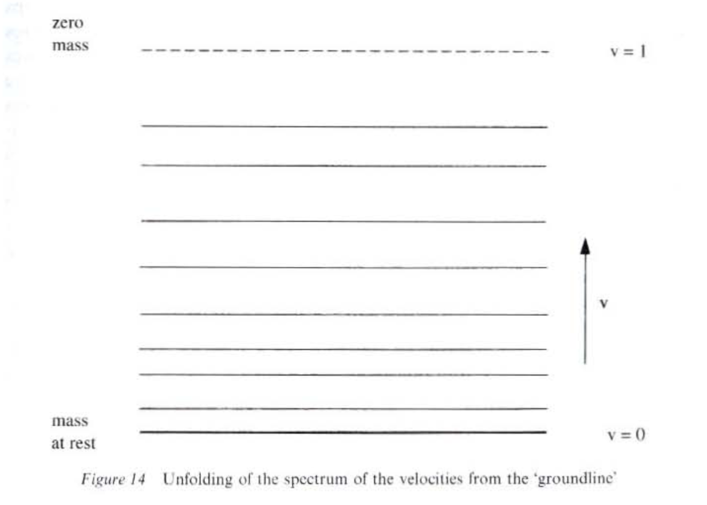
Thus, the velocities can be contemplated solidly in a spectrum like the different distance lines of a painting. But we know that the compact grasp sanctioned by the perspective projection is only achieved by resolute positioning at the horizon of the velocities: failing to propel himself there straight off, the physicist, who accelerates in his mind to reach a very high but finite velocity, remains a prisoner of the clichés of mechanics and obstinately persists in ‘catching up’ with a horizon without ever seeing himself at the horizon. For the horizon plays a crucial role: it provokes and controls thought experiments. A thought experiment does not set out to predict a fact or to transform this or that object, but rather to stage the physicist himself grappling with his mental habits, and above all to lay bare the imagery that he uses when he claims to be merely ‘commenting on’ or ‘verbalizing’ the operative power that is supposed to be buried in the calculations.
We know that Einstein liked to imagine himself being dragged along in a chariot at the speed of light or totally isolated in a lift: to have shown that there is no innocence of intuition is certainly one of his most decisive contributions to the community of physicists. Among the clichés peddled by classical mechanics, the self-evidence of solidity was undoubtedly one of the most tenacious, and the whole of the elastic capacity of the horizon-hinge was necessary to dissolve it and to mould parts and segments from the same clay. The velocity horizon destroys the pretension of any standard measure subordinated to it; this is Lorentz’s famous contraction. Thus, just as depth betrays the collusion between the apparent size of an object and the distance of observation, so the existence of a velocity horizon, of a degree 1 of the grasps of space, explodes the arbitrariness and ‘naturalness’ of the standard measures of length and of the juxtapositions associated with them: an observer associates the number with a ruler passing in front of him at the velocity if he ‘already knows that it is identical to a ruler of length 1 placed motionless opposite him’. Lorentz’s contraction must be understood as a thought-experiment that allows the ruler-standard measure to take on the whole interval of values between 0 and 1: ‘1’ is no longer a unit but the extremity of a spectrum.
We are ready to tackle the third stage of this progress by diagrams which leads to the revelation of the duality between the grasp of a natural body as a particle and its grasp as a wave. In the first stage, Oresme’s diagramming of motion allowed it to be cut out as the plastic unit of three gestures and made a figural approach possible. Then, in the second phase, the perspective projections of these diagrams led to the invention of the specific elasticity that allowed their insertion in a spectrum opened out from a horizon. Each kinematic diagram is articulated with mechanics, thanks to Galileo’s experiment, which consists of attaining, for every degree of velocity, a situation where mechanics is indistinguishable from pure kinematics and described by the principle of inertia: ‘In the absence of any external force, a body continues to move straight ahead at a uniform speed.’
Let’s call this fictitious hinge between mechanics and geometry the ruler of mass The ruler of no mass — the horizon — therefore unfolds all the rulers of mass that embody the degrees of distinction between time and space, from that of the ‘groundline’, fixed by a mass at rest and therefore not zero, to that where they are indistinguishable.31 Note, and this is very important for what follows, that the datum of a mass abstracted from mobility is therefore equivalent to the intuition of a radical alienation between time and space and defines an infinite degree of distinction between the latter, whereas a zero mass is associated with a zero degree of distinction. We know that the horizon, in lavishing degrees of elasticity, functions like a powerful balancer of intuitive clichés: it makes all velocities pivot. The intuition associated with an indefinite acceleration allows only a partial neutralization of the cliché of the juxtaposed rulers, of ‘invariable length’; it confines itself to joining them up externally by having them file past faster and faster. Lorentz’s contraction manages to vanquish the cliché.
We are now going to see, in the third stage, how de Broglie takes Einstein at his word: to be positioned right away at the velocity horizon is to have the photon (a zero mass) within reach. But what about non-nil masses? And if rest were only a cliché? It is de Broglie’s genius to have seen that the logic of Planck’s and Einstein’s prescriptions led to making rest itself problematic by understanding it as a horizon, by unfolding that which seems the most ‘given’ from that which looks as though it is inaccessible.
We know that Oresme’s diagrams assessed velocity by contrasting a region that had already been visited by a moving body with another that had yet to be explored. These diagrams therefore privilege a spatial cliché: that of an infinity of markers taken to be already placed at an equal distance from one another and fixed in relation to an observer. For the latter, the associated diagram of Minkowski (we have chosen an origin of time figured with a dotted line) presents space time as if striped with verticals.
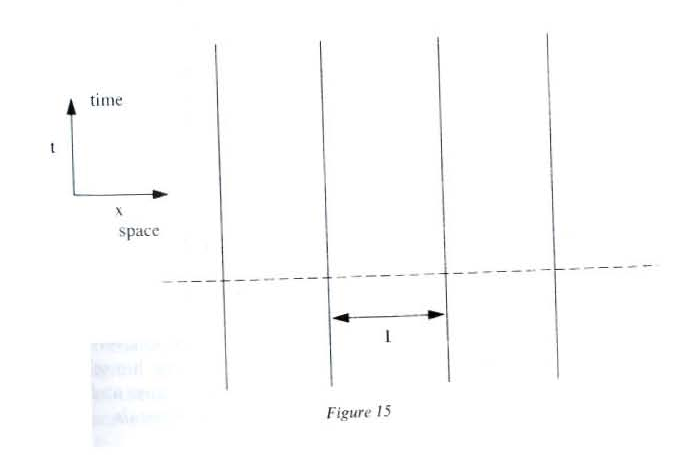
Note that if this system is now animated by a velocity in relation to the observer, the lines of the diagram become oblique and a time interval arises from the continuum.
Figure 16 makes it possible to follow closely the progressive acquisition of degrees of velocity which corresponds to the folding back of the angle on the diagonal . A ‘finite’ velocity () does therefore correspond to a degree of distinction between time and space. Note that this degree is maximal when the moving body is of zero velocity, the angle being then a right angle. In this situation, ‘space-time’ is only a ‘pure space’, completely subject to the cliché of juxtaposed rulers for eternity.32
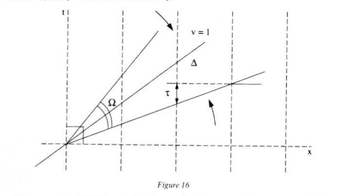 The strength of Minkowski’s diagram is in the way it captures velocity as an angle, thus making visible the pivoting of velocities around their horizon. In making ‘pure space’ commonplace as a perpendicular, velocity no longer appears as what is missing in order to avoid the cliché of the fixed markers: the intuition of an ‘infinite’ velocity (it would be better to say ‘indefinite’) detects the weakness of an intuition which, too weak to cut out the degree 1, exhausts itself in doing away with space by remaining prisoner of a groundline that it could not ‘open’ and in having the markers file past ‘faster and faster’.
That is why it is better to ‘set out’ from the diagonal , open the angle progressively and thus reveal the progressive spreading out between the sections of pure space () and thus the sections of pure time (). The diagram of the moving body at rest thus appears like a boundary diagram symmetrical with the situation of the completely closed angle (degree 1). By letting velocity open out like an angle, we give it ‘two sides’ and discourage any temptation to see it as merely claiming to abolish a spatial interval.
To make the symmetry of time and space at the kinematic level where he places himself still more patent, de Broglie decides to give himself a pure ‘periodic phenomenon’, that is to say, to switch the roles of time and space, in the preceding diagram. Space-time is now striped with horizontals.
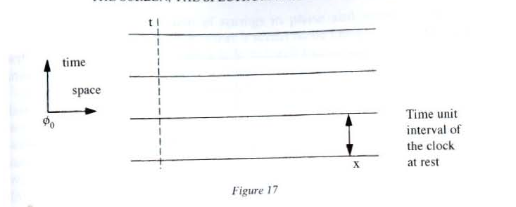
Space-time is reduced to pure time, to a cyclical universe that traverses ‘states’ and permutes phases without spatial distinction.
Let’s suppose now that this ‘periodic phenomenon’ moves at the velocity in relation to the observer: the ‘bevelled edge’ closes up and length appears.
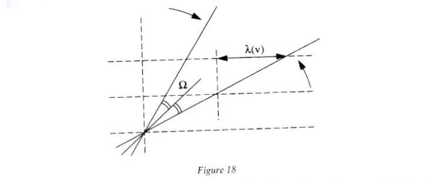
This time, space is the parameter and time is what we have called the enveloping amplitude (see II,1). With the markers of figure 15, we had folded33 space-time in the ‘direction of space’. We have just folded the latter in the ‘direction of time’ to obtain an interval of space , but this length is not ‘real’; it is not obtained by actually moving a material standard measure along a body. This length is associated with what physicists call the phase velocity of a wave. This velocity is that of an imaginary observer moving in such a way that the system always appears to him in the same state.34 De Broglie shows that this phase velocity (which we denote as ) is equal to and therefore greater than 1. An optical ‘index’ can be made to correspond to it. Since , is comprised between 0 and 1; this index is fictitious and is not linked to the passage across a ‘real’ material environment.
The diagram in figure 19 unfolds the spectrum of phase velocities, which is also that of the degrees of distinction of time and space.
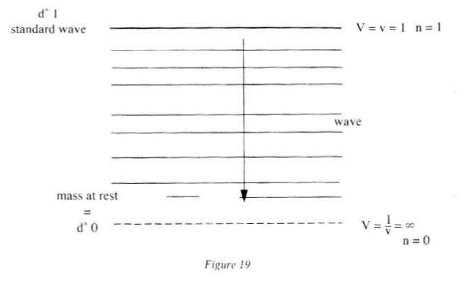
We observe that the mass at rest is ‘reached’ for an infinite value of the velocity . This is the same as considering as a horizon the cyclical universe associated by the observer with the ‘periodic phenomenon’ which is at rest in relation to himself. A reading of the preceding diagram shows that the placidity of the intuitions linked with this phenomenon at rest is not at all self-evident for an observer-wave, always on the move, who, to reach it starting from the standard wave () — which corresponds for him with a ‘natural’ indistinguishability between time and space — will have to ‘spread himself out’ indefinitely to position himself in the ’rest’ (see fig. 4). (In terms of angle, the perpendicularity of diagram 16 is at the horizon of the spectrum of variation of .)
De Broglie gives an example that illustrates the virtual spatial distinction that arises when the ‘periodic phenomenon’ is set in motion in relation to the observer.
Consider a system of springs oscillating in phase in relation to which we are immobile. This situation is defined by the diagram (fig. 17) and its horizontal stripes. The system appears ‘given in a single piece’ to us and we associate with it the image of a myriad identical springs vibrating in unison. For us space-time is just a large clock and the system offers up no spatial difference from which a unit of length could be cut out.
But if the system is set in motion — if the scissor-blades of figure 18 close up — the springs no longer appear to us all vibrating in phase. We can distinguish the lines of identical phase and decide to see wave motions sketching themselves out. These wave motions are not ‘real’; we have to as it were print them virtually in a space and de Broglie indeed specifies that they are not to be confused with appearance. The streaks of diagram 18, which are henceforth oblique, correspond to the different returns of the system into the same state and we can, through a game of intersections, associate it with an interval in our space-time.35 The system of springs in phase and immobile imprisoned space-time in a single rhythm. Now, it seems to be made iridescent by a wave whose number of crests per metre it is ‘natural’ to count, as Oresme’s diagrams measured the number of markers passed per second.
De Broglie’s great merit consists in his having understood that at the essentially kinematic level where he placed himself he would not establish the wave/particle duality by misleading simple analogies, induced by considering waves that are ‘real, existing in nature’, in a contingent manner, and that the new physics must give its attention to the intuitive grasps themselves: the phase wave is not a tangible or causal cliché, associated with the actual transit of form or energy (waves in water, shock waves, electromagnetic waves or others …).36
Nor was it a question for him of relying on a ‘certain analogy’ linking the principles of Maupertuis — ‘a particle deploys the minimum of action in crossing its trajectory’ — and of Fermat — ‘light crosses material media in a minimal time’. Indeed, it is easy to see that, if light were composed of particles to which Maupertuis’ principle could be bluntly applied, the passage from a medium 1, of index , to a medium 2, of index (with ), would make the rays diverge, which contradicts the laws of refraction (see fig. 20).
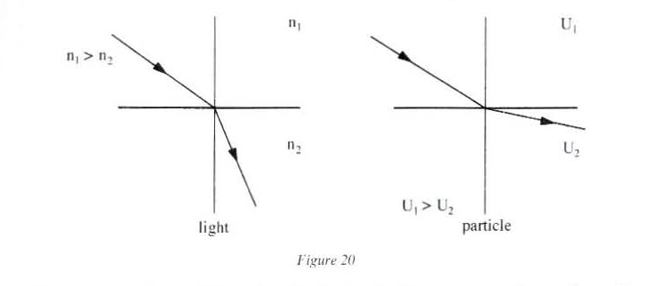
The crude analogy with real media (whose indices are superior to the unit) leads to an impasse and therefore brings out an opposition between the corpuscular point of view and the undulatory point of view. Experience understood as a stark confrontation with ‘reality’ decides in favor of the undulatory point championed by Fresnel.
To reconcile the two points of view, it is necessary to consider fictitious waves, velocities and indices, implying no causality cliché of wave motions crossing real media, de Broglie revives Galileo’s bold stroke; to conceive the common emergence of geometry or mechanics, Galileo had come up with the famous thought experiment of the trolley descending an increasingly shallow slope. In this fiction, the ‘external’ forces die out gradually. Galileo succeeds in putting parentheses around the materiality of the world and the causalities associated with it. We know that this scenario cleared the way for the statement of the principle of inertia by Descartes. De Broglie recognized that if, in the vacuum, in the absence of all forces, a pure quantity of motion produces a ‘ruler of mass’, a means of purging mechanics to the utmost point to joint it up with geometry, in the same way a rigorously monochromatic wave, existing from all eternity, is not dispersed — as a particle is not deflected in the absence of force — and asserts itself as that which can grasp the common emergence of optics and geometry. Naturally, the parameters of this wave (frequency, wave length, etc.) are directly calculable from those of a ruler of mass, without reference to any external medium transcending the problem posed.
In privileging time as a parameter, we posited the unit form for all motions: uniform rectilinear motion (Galileo’s ‘massive ruler’), which made it possible to measure force as the cause of a greater or lesser deviation in relation to its canonical form. By taking space as a parameter, the phase wave asserts itself as the unit form for vibrations.
This is Aristotle’s revenge on Galileo! Classical mechanics had discharged uniform circular motion from its dignified position as standard measure; henceforth, thanks to the periodic phenomena associated with a moving body by the procedures formulated by de Broglie, the circle finds a new ontological dignity. As a figure of the cyclic, it implies no real trajectory: it is, one might say, the unit form of vibrations. By deforming Galileo’s rulers of mass, we can obtain all the motions of classical mechanics and equally, by modulating its oscillators, we can in principle respond to all the problems posed by wave mechanics.
We have just seen that the association of an oscillator and a ruler of mass in no way depends on a figural analogy abstracted from the experience of ‘real’ media. No more could it be calculated from the principles of analytical mechanics (Planck’s introduction of oscillators for the photon is already a revolutionary stroke). We have already sensed that this association is played at the level of diagrams and the grasp of the unfoldings of degrees that they authorize.
In juxtaposing these two diagrams, it becomes patent that the unfolding of the spectrum of rulers of mass can be superposed by symmetrically with the unfolding of the spectrum of oscillators (perfect chromatic wave).
This superposition is possible while respecting the hierarchy of degrees of and of . It is easy to see that the relativistic composition of the velocities of the moving body is also that of the phase velocities. In particular, the horizon of punctual velocities superposes itself on that of phase velocities (mass at rest). This diagrammatic isomorphism aims at a deeper field than that of ‘structures’ or functional relations. It makes flagrant the proximity of boundary experiments which, by raising themselves beyond the causalities and dispersions that affect mundane mobility, makes it possible to propose, for each degree of discernment of the spatio-temporal, a truce between geometry and mechanics and a truce between geometry and optics. Thus it is the horizon which, in providing a hinge between what must be called diagrammatic experiments,37 controls them by unfolding a common elasticity: that of the wave-particle.
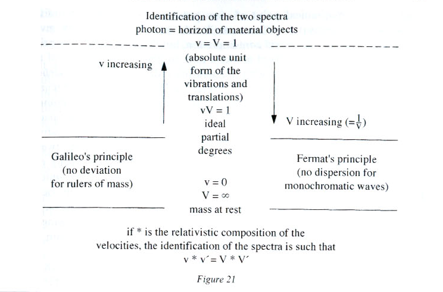 We saw how Einstein smashed the inaccessible character of the degree 1 of velocities. By recognizing the mass at rest as a horizon by means of an ‘infinite’ velocity, de Broglie renews the scholastic tradition which posited a maximal degree (= degree 1) and then shaded off to the infinitely obscure (the zero degree). Like Einstein, de Broglie understood the whole elastic force of the horizon and its capacity to unfold and to compress at will. The landscape of physics is henceforth turned on its head: the velocity of light is no longer the asymptote that evades all material grasp and mass at rest is no longer naively palpable, made available, there, in front of me, by a self-evident intuition. Einstein, in perching on a photon, and de Broglie, in sending the mass at rest’ infinitely far’, daringly offered two thought experiments whose repercussions cannot be overestimated.
Geometry and optics had gone hand in hand for a long time before Galileo imagined the boundary experiment of the inclined plane and conceived the diagram of the rulers of mass (see fig. 14) which articulates mechanics and geometry by making explicit the line where they merge and from which they bifurcate. The mechanical point of view privileges the impact of individual solids and the exteriority of forces. Leibniz’s spatium succeeded in giving a certain elasticity to to mechanical contemplation, but the latter remains a prisoner of the spatial cliché of the fixed markers and, to liberate the powers of acting of bodies, must content itself with accelerating individuals at rest indefinitely. It would like to be able to dissolve completely (at least in thought) the tenacious intuition of the juxtaposition of standard measures of length — by going past them ‘infinitely quickly’ — to reach this paradise where time and space are indistinguishable and which seems to hold the secret of mechanical individuation. We know that it was necessary to wait for the dawn of the twentieth century for mechanics to risk looking the infinite in the face, cutting out its horizon and mastering the device of articulated contemplation which unfolds it. For optics, its rival, all that had been ‘natural’ for nearly ten centuries. For there exists a sovereign elasticity of intuitions dispensed by light: optics does not ‘begin’ from already given units to the exhaust itself in endowing them with some flexibility, in making asymptotically a statistical continuum which is always far removed from the perfect plenitude of a spectrum.
This is no doubt why, at the horizon of perfection of forms, scholastic optician-philosophers placed pure, indeterminate light (lux), principle of all the distinctions. But it was radiated light (lumen) that awakened the active potentialities of matter, and all bodies, including the most humble, partook of the luminous. With Al-Kindi, Grosseteste and Bacon, optics is thought of as physico-mathematical; they state a principle of correspondence between the figures of geometry (straight lines, angles, similarity) and the modes of rectilinear propagation (reflected, refracted, diffracted …).38 Pure light does not fear the infinite: simple, undivided, it never dissolves into the indefinite and adheres resolutely to its horizon — that which Grosseteste had recognized as the beginning of forms:
Light, in fact, spreads out from itself in all directions, in such a way that, from a luminous point, a luminous sphere, of any size, is instantly generated, unless it is blocked by something opaque. Now, corporeality is what has as a necessary consequence the extension of matter in three dimensions … Light is not therefore a form that results from corporeality, it is itself a corporeality … In truth, light is, of all corporeal things, that which has a more worth, noble and excellent essence; it is, more than all other bodies, assimilable to the separate forms that are intelligences. Light is therefore the first corporeal form …
For if light, by the infinite plurification of itself, gives extension to matter [in such a way as to confuse it] in dimension of two cubits, then by doubling this infinite purification, it gives effect in dimension of four cubits.39
By diffraction the plasticity of lux finally makes generous multiplication possible — a ‘plurification’ — which does not exhaust itself in collating the debris-units of a fallen totality. This plurification makes it possible to give matter extension, to confront actual infinites and even to have an effect on them:
It is possible that an infinite collection of numbers may be tied proportionally to an infinite confluence according to all numerical [relationships] and also according to all non-numerical [relationships]. And there are infinities that are greater than other infinities that are smaller than others. The collection of all numbers, odd as well as even, is infinite; and it is therefore greater than the collection of all even numbers, which is nonetheless infinite. For it exceeds it by the collection of all odd numbers. Furthermore, the collection of continually doubled numbers beginning with the unit is infinite; and in the same way the collection of all the halves corresponding to these doubles is infinite … And it is clear that the same is true for all kinds of numerical proportion, since the infinite can be linked proportionally to the infinite according to any one of these proportions.40
This plenitude dispensed by the lux and manifested by the diffraction of the lumen never allows itself to be corrupted by the indefinite, and that is why it is so fascinating. Bouncing and caressing, it lets materialities shine; it does not mark them in the way that a stamp imprints wax. Wave sends out wavelets, then others and, much better than the material point, takes up the motion itself of intelligibility by distinguishing through sheens, marks and halos much more than through contrasts.
Classical mechanics and geometry might well begrudge the lux two privileges: to be already positioned at the horizon of forms and to individuate patiently degree by degree by giving free rein to the play of caustics41 and deflections.
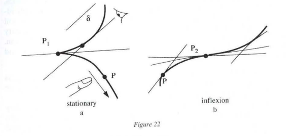
Consider the points and in figure 22. The ‘singular’ character of these points cannot be captured by a simple external designation, but must be grasped by the very motion of the look. This point makes no contrast — like an isolated point in a plane — but patiently prepares for its detection, and this is why such ‘remarkable’ points always keep in their definition something of the motion that brings them closer and of the look that, by delaying more or less, was able to pay attention to them and awaken potentialities.
This distinguishes the points and from ordinary points like , which can be reached in two completely independent manners. One can follow the curve with one’s finger and designate as the point that marks the contrast between what has been covered and what remains to be covered; one can also let a straight line slide parallel to itself — which is equivalent to absorbing the look in a constant direction — until becomes simply ‘touching’ (tangential) to the curve. With an ordinary point, the hand that draws completely ignores the look that envelops. The situation is different for a stationary point like or a point of inflexion like ; the deflection of the line echoes the pausing of the look, the motions of the hand and eye become entangled there.
Stationary points or points of inflexion are therefore those which problematize the ‘natural’ functional correspondence between the point running along its trajectory and the tangent that envelops. Among all the points of the curve, the singular points are therefore elected as those where envelopment by the look is not equivalent to a contrast and forces us to respect the specificity of optical individuation. The latter is able to be patient and is aware of the vanity of claiming to isolate this or that colour from a rainbow or to extract this or that singular point from a spectrum: it is better to allow the most determinable to be elected by discovering a device capable of opening out all virtualities, and this is why light introduces the principles of stationary determination from the outset.
In order to distinguish this or that individual, these principles do not allow themselves to be guided by simple contrasts or by crude quantitative inequalities, proceeding from partitions or manipulations of already accomplished individuals, which reduce measurement to a balance sheet of which one hopes it will be able to gather them into a presentable totality. The principles of stationary determination do not hesitate to meddle in the very process of individuation, as the two following statements, coming respectively from Fermat and Feynman, show:
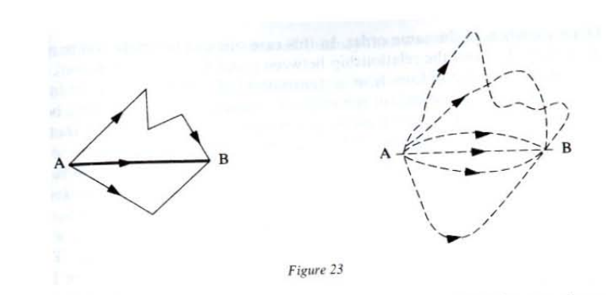
These two statements, in particular Feynman’s, which introduces the method of the ‘integral of paths’, show that the stationary principles are always subject to ‘formal integrals of amplitude’ or ‘amplum integrals’ given by formulae of the type:
Notice immediately that the integral sign does not always refer to a rigorously defined mathematical being, but to the envelopment of all the paths of a continuum subjected to certain constraints (for instance, all of the paths passing by and in the case of the preceding statements). The ‘amplum integrals’ should not be understood as a calculation technique or as a balance sheet of the juxtaposition of all the paths of ; they accomplish and finish the lineage of Oresme’s diagrams by linking it to a principle of optical individuation which first of all envelops to determine afterwards.43
In (3), the term is not an ordinary function but a triptych obtained by moving Oresme’s intensity along a path (see fig. 24).
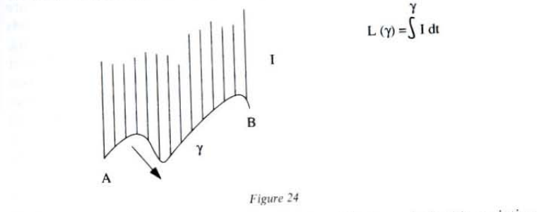
Naturally, varies when is deformed, and it is precisely this variation that is going to allow the ‘ordinary’ paths to be distinguished from the singular paths: for an ordinary ‘individual’ , any virtual disturbance of induces on a variation of the same order. in this case one can therefore compare the triptych and the relationship between and with a ‘function’, with a simple conveyance of form from a transmitter individual to a receiver individual, with no ‘preparation’ (in the sense of ‘preparation of the moving body’, see chapter I, p. 19). The relationship between and is such that the variation of one of the terms can be assessed from the variation of the other. There is a transparency of the relationship between the ‘cause’ — the form of — and the effect — — which is indifferent to the constraints of the domain . The transitive and reciprocal character of the relationship that links to is that of naïve ‘determinism’. The ‘singular’ individuals are those whose virtual disturbances do not induce a variation of of the same order. These ‘stationary’ individuals are therefore those that discourage any reversible functional grasp of the type ‘the one gives the other’ — of the triptych . Moreover, their existence and their determination are analytically bound up with the constraints on the domain .44
Let’s return now to the ‘integral’ (3). It is possible to show that it is precisely the ‘stationary’ individuals that provide a significant contribution to (3). We therefore now see the interest of this type of integral: to select certain singular modes of exposition of degrees (of certain ‘journeys of Oresme’), ignoring the ordinary modes (‘functional triptychs’). The selection of these modes is not an arbitrary external designation: the integral (3) is constructed to give a certain ‘naturalness’ to the emergence of the singular ‘journeys of Oresme’, which seem to sketch themselves out with the self-evidence of the folds of Leibniz’s membrane.
We have already been able to observe the great allusive power of the perspective projection of Oresme’s diagrams; the integral of the paths (3) is a still more redoubtable stratagem, which acutely links the conditions that define the domain (‘pass by points and ’ in the case of Feynman’s statement) and the election by folds of certain individuals in optical .
These folds are as natural and artificial as allusions of depth can be. Nature certainly makes generous, thoughtless provision of scales, spectra of variations and intervals of degrees that are as many guides for our journey over Being, but these precious hinges are mixed up.45 It is necessary — and with what difficulties! — to construct devices of separation and liaison which deliver independent parametrages and also assure us of the master of entire families of individuals and the power to plough at will the domains of variation which regroup them. It is thus that, by a retrospective illusion, we are tempted to conceive a stratified ‘model’ of the natural amplum, wisely divided into strata of triptychs which with perseverance one would finally exhaust.
But the example of the stationary point of figure 22 shows the naiveté of the cursory hand or look. We have also already emphasized that the singular triptychs that are distinguished by the method of the integral of the paths are those that cannot be reduced to a functional tautology and that therefore prohibit any stratified reading of the amplum, any reduction of its unfolding a parametric ‘follow-up’, to a ‘natural’ journey that would ignore the conditions that define the domain .
The amplum integral (3) is adjusted in such a way that the conditions associated with become creative in exerting maximal influence over certain remarkable individuals. These individuals are elected because they solicit and assert themselves as obligatory stages of our journey through Being. Here, the singular claims its rights: the dualities between what is determined and what determines, between the conditions of unfolding and the actualizations, are abolished to the profit of a coupled resonance accounted for very well by the mathematical theory of the drum: the modes of vibration (the ‘spectrum’) give information about the form of the drum (the conditions which define ).46
It would even be tempting to say that certain modes appear capable of creating their own condition of existence by looping around themselves. Interest in the integrals of amplum, contemporary physics no longer limiting its ambition to stockpiling spectra of variations and stratifying a body of knowledge, but aiming to grasp as closely as possible the gestures that liberate triptychs that unfold and compress: these will come as no surprise.
The crucial role played by envelopment should be emphasized: it functions like a ‘horizon’ that controls a field of intuitions, and does so almost always before the rigorously expressed mathematical definition of the type of (3) emerges. The amplum integral captures an experiment of individuation which envelops in order to determine, and this gesture supersedes in ontological dignity the summing of already accomplished individuals. it is not a question of seeking to totalize the diversity of the real or of ‘deducing’ individuals from the horizon-amplum, but of cutting out the continuum (of trajectories, but also of spaces, of metrics and of multiplicities of all kinds) so that the constraints echo in the most perfect way in the form of creative virtualities and so that one thus ensures the ‘natural’ selection of individuals that are increasingly capable of secreting their own condition of existence.
This is why de Broglie’s meditation on the analogy of Fermat’s and Maupertuis’s principles has such far-reaching consequences, well beyond its stakes in physics. In subordinating optical individuation and mechanical individuation to a common horizon, he succeeded (with Planck and Einstein) in overcoming the rivalry of the two poles which, for nearly two centuries, had been fighting over the direction of the project of the scientific grasp of the being-in-the-world:
That is why two different rhythms underpin the ‘history of ideas’: the one, completely discontinuous, of ‘ruptures’, ‘paradigms’ and their refutations, and the other of the problematic latencies that are always available for reactivation and full of treasures for those who can reawaken them.
We prefer the term ‘triptych’ to that of ‘triplet’. ‘Triplet’ belongs to the technical vocabulary of set theory: it is an ordered collection of three elements. ‘Triplet’ only refers implicitly to a process of orientation, which it hurries to open out. ‘Triptych’ is a three-panelled painting and explicitly suggests hinges. To speak of a ‘triptych’ (amplitude, intensity, parameter) is to emphasize the articulation and the undivided character, whereas the ‘triplet’ concentrates the attention only on the rule that associates the statement ‘A, then B, then C’ and the symbol .↩
For all the notions and concepts used in this chapter the reader can refer to the Cambridge History of Later Medieval Philosophy (Cambridge University Press, 1982).↩
We follow M. Clagett, The Science of Mechanics in the Middle Ages (University of Wisconsin Press, 1959), 347-70, for the text and diagrams of the configurations of qualities. Remember that Oresme (ca. 1325-1382) was bishop of Lisieux. We are indebted to him for works of popular science and on kinematics (the Commentaire aux livres du ciel et du monde) and an important treatise on money (De mutationibus monetarum). On these questions, see P. Duhem, Etudes sur Leonard de Vinci (Paris, 1909-13), 3 vols; and A. Maier, An der Grenze von Scholastik und Naturwissenschaft (Rome, 1952), and Die Probleme der intensiven Grösse (Rome, 1939).↩
St. Thomas Aquinas, Summa Theologica, I-II, question 52, article 1.↩
Ibid.↩
Ibid.↩
We are following here the Latin text given by M. Clagett: ‘… seu basis est linea in subiecto quasi protracta…’ (The Science of Mechanics in the Middle Ages, p. 371).↩
It is necessary to distinguish between ‘unity’ as the character of what is one (for instance, of a living body or a work of art) and ‘unit’ as a means of measuring sizes of the same basic type (metre, kilogram, pound, etc.).↩
Clagett, p. 348.↩
Ibid., p. 350.↩
Aristotle, Physics, V, 225, b 16-226 a 22. B. Besnier, in a paper given at Cerisy (Colloque Rationalité et objectivité, chaired by J. Petitot, September 1988), showed that for Aristotle there could be neither motion of motion, nor change of change. in fact, it would be necessary for the change of type 1, acted upon by the change of type 2, to be capable of furnishing it with a substrate that would undergo the change while itself remaining unaltered. The modulation of intensity saves the Merton College authors and Oresme from being trapped between motion and rest. The truth of motion is in its elasticity, and this is why Leibniz so often insists on considering rest as motion that is infinitely slow.↩
Richard Swineshead: ‘To every degree of velocity (i.e. qualitative or instantaneous velocity), there corresponds a lineal distance which would be described, assuming a movement through the time at this degree’ (quoted by M. Clagett, The Science of Mathematics in the Middle Ages, p. 214).↩
Quoted from the Questions of Jean Le Chanonine by P. Duhem (Etudes sur Léonard de Vinci p. 343).↩
Geoffrey of Ockham, ibid., p. 342. Remember the classical argument against such addition: one never obtains hot by juxtaposing tepidnesses.↩
Clagett, The Science of Mechanics in the Middle Ages, p. 357.↩
Continuous in the scholastic sense, where no part is distinguished in action.↩
G.W. Leibniz, ‘Initia rerum mathematicarum metaphysica’, Leibnizens mathematische Schriften (M), Gerhardt, vol. VII, p. 19: ‘Amplum est ultimatum terminatum extensum.’ There is a plenitude, a creative homogeneity about the amplum: ‘Similarity is recognized on the basis of their boundaries; thus, since a solid is something more than what can be a boundary, it is internally everywhere similar.’ The amplum is a space of deformation where things that ‘are not homogeneous … can pass into one another by continuous change.’ It creates homogeneity by distributing similarity and makes the cooperation of the dimensions possible: ‘The dimensions are diverse quantities, heterogeneous in principle, which can be understood as protracted in each other.’↩
‘An application of several elements of a series to several elements of another series, applied in an ordered manner, is the quantity obtained by associating with each element in a series an element of the other’ (Leibniz, ‘Dynamica de Potentia’, I, I, 3, M, VII, pp. 307-19).↩
The ductus comes into the ‘Dynamica et potentia’ a great deal and can be imagined as a discipline of line that defines the protocol of encounter between two disparate series. It is this that distributes the homogeneity that will make the functional grasp of the emergence of another dimension possible.↩
Leibniz, ‘Initia …’, M, VII, p. 34.↩
F. Cajori, History of Mathematical Notations (Chicago, 1952).↩
One can naturally associate analogous diagrams with the impulse and with the action .↩
See notably, in modern cosmology, Everett’s theory of competing worlds and Hawking’s universal wave: J. Hartle and S.W. Hawking, Phys. Rev., 1983, D 28 2960; S.,W. Hawking, Houches conference (1983), C. De Witt (ed.) (New York: Addison-Wesley, 1984). On the thoery of competing worlds, see H. Everett, Rev. Mod. Phys., 1957 (29), 454; B.S. De Witt and N. Graham, The Many-Worlds Interpretation of Quantum Mechanics (Princeton: Princeton University Press, 1973).↩
On maximal degrees, see M. Clagett, ‘Richard Swineshead and Late Medieval Physics’, Osiris, 1950, vol. 9, pp. 142-61.↩
E. Panofsky, La Perspective comme forme symbolique (Paris: Minnuit, 1975), 138.↩
See G. Guillaume, Langage et Science du langage, Montreal 1973, on the fundamental character of the split between verticality and horizontality; in particular p. 186: ‘The mechanism to which the human spirit obeys in the case in point is that of an operative, constructive longitude and of resulting latitudes marking the state of advancement of the constructive operation engaged and developed in longitude.’↩
On the inadequacy of successors, see A. Badiou, Le Nombre et les nombres (Paris: Seuil, 1990), chapter 9.↩
I am referring to Hegel’s analyses of the bad infinite (die schlechte Unendlichkeit), Science de la logique. L’Etre, Bk I, 2nd section, chapter 2, C, b, 1 (Paris: Aubier, 1972), 231-48.↩
J.-T. Desanti, Les Idéalités mathématiques (Paris: Seuil, 1968), 133.↩
A. Miller, Imagery in Scientific Thought (Boston: Birkhauser, 1984), chapter 3 and 4.↩
The datum of a non-zero mass is equivalent to providing a perpendicularity. See Goldblatt, Orthogonality and Space-Time Geometry (Springer Verlag, 1987).↩
On this paragraph, see de Broglie, Recherches sur la théorie des quanta (1924) (Paris: Masson, 1963), 19-31; and Ondes et Mouvements (Paris: Gauthier-Villars, 1926), 6-11.↩
On the fold, see G. Deleuze, Le Pli, Leibniz et le Baroque (Paris: Minnuit, 1988); A. Scala, La Genése du pli selon Heidegger (forthcoming).↩
De Broglie, Recherches sur la théorie des quanta, p. 23.↩
Ibid. p. 29.↩
See de Broglie’s lovely meditation, ‘Sur le parallélisme entre la dynamique du point matérial et l’optique géométrique (Journal de physique, January 1926, series VI, vol. VII, pp. 1-6), where he studies ’the propagation of a given type of wave in a vacuum at a great distance from all other matter …’↩
At the level of fundamental discoveries, the work of a physicist is comparable to that of the painter who has to smash figurative data. On the relationship between diagram and pictural event, see G. Deleuze, Logique de la sensation (Paris: La Difference, 1981), chapter XI and XII.↩
On these subjects, see A.C. Crombie, La Philosophie de saint Bonaventure (Paris: Vrin, 1924).↩
‘De luce seu de inchoatione formarum’, in L. Baur, Die philosophischen Werke des R. Grosseteste (Münster, 1912), 52-61.↩
Ibid.↩
Remember that the caustic is the luminous curve formed by successive intersections of rays leaving a point and reflected or refracted by another curve.↩
R.P. Feynman, The Strange Story of Light and Matter (Princeton: Princeton University Press, 1985).↩
See (II,1) the final observation on the triptych .↩
This is the object of the calculus of variations.↩
On the nature and spectra of ordinals, see A. Badiou, L’Etre et l’Evénement (Paris: Seuil, 1989), 141-47.↩
The pitch of the sounds produced is linked to the connecting edge (the edge of domain ) of the membrane.↩